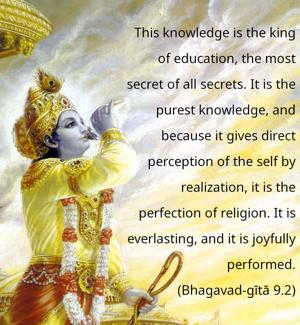
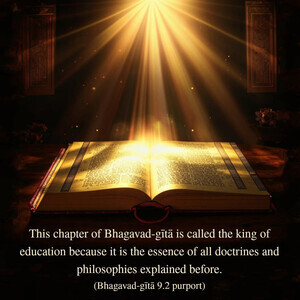
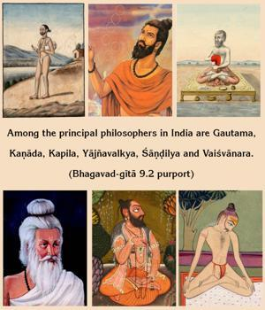
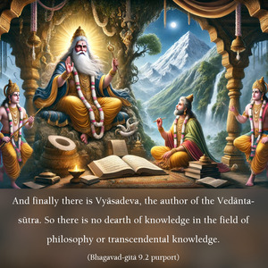

This knowledge is the king of education, the most secret of all secrets. It is the purest knowledge, and because it gives direct perception of the self by realization, it is the perfection of religion. It is everlasting, and it is joyfully performed.




This chapter of Bhagavad-gītā is called the king of education because it is the essence of all doctrines and philosophies explained before. Among the principal philosophers in India are Gautama, Kaṇāda, Kapila, Yājñavalkya, Śāṇḍilya and Vaiśvānara. And finally there is Vyāsadeva, the author of the Vedānta-sūtra. So there is no dearth of knowledge in the field of philosophy or transcendental knowledge. Now the Lord says that this Ninth Chapter is the king of all such knowledge, the essence of all knowledge that can be derived from the study of the Vedas and different kinds of philosophy. It is the most confidential because confidential or transcendental knowledge involves understanding the difference between the soul and the body. And the king of all confidential knowledge culminates in devotional service.
Generally, people are not educated in this confidential knowledge; they are educated in external knowledge. As far as ordinary education is concerned, people are involved with so many departments: politics, sociology, physics, chemistry, mathematics, astronomy, engineering, etc. There are so many departments of knowledge all over the world and many huge universities, but there is, unfortunately, no university or educational institution where the science of the spirit soul is instructed. Yet the soul is the most important part of the body; without the presence of the soul, the body has no value. Still people are placing great stress on the bodily necessities of life, not caring for the vital soul.
The Bhagavad-gītā, especially from the Second Chapter on, stresses the importance of the soul. In the very beginning, the Lord says that this body is perishable and that the soul is not perishable (antavanta ime dehā nityasyoktāḥ śarīriṇaḥ). That is a confidential part of knowledge: simply knowing that the spirit soul is different from this body and that its nature is immutable, indestructible and eternal. But that gives no positive information about the soul. Sometimes people are under the impression that the soul is different from the body and that when the body is finished, or one is liberated from the body, the soul remains in a void and becomes impersonal. But actually that is not the fact. How can the soul, which is so active within this body, be inactive after being liberated from the body? It is always active. If it is eternal, then it is eternally active, and its activities in the spiritual kingdom are the most confidential part of spiritual knowledge. These activities of the spirit soul are therefore indicated here as constituting the king of all knowledge, the most confidential part of all knowledge.
This knowledge is the purest form of all activities, as explained in Vedic literature. In the Padma Purāṇa, man’s sinful activities have been analyzed and are shown to be the results of sin after sin. Those who are engaged in fruitive activities are entangled in different stages and forms of sinful reactions. For instance, when the seed of a particular tree is sown, the tree does not appear immediately to grow; it takes some time. It is first a small, sprouting plant, then it assumes the form of a tree, then it flowers and bears fruit, and, when it is complete, the flowers and fruits are enjoyed by persons who have sown the seed of the tree. Similarly, a man performs a sinful act, and like a seed it takes time to fructify. There are different stages. The sinful action may have already stopped within the individual, but the results or the fruit of that sinful action are still to be enjoyed. There are sins which are still in the form of a seed, and there are others which are already fructified and are giving us fruit, which we are enjoying as distress and pain.
As explained in the twenty-eighth verse of the Seventh Chapter, a person who has completely ended the reactions of all sinful activities and who is fully engaged in pious activities, being freed from the duality of this material world, becomes engaged in devotional service to the Supreme Personality of Godhead, Kṛṣṇa. In other words, those who are actually engaged in the devotional service of the Supreme Lord are already freed from all reactions. This statement is confirmed in the Padma Purāṇa:
aprārabdha-phalaṁ pāpaṁ
kūṭaṁ bījaṁ phalonmukham
krameṇaiva pralīyeta
viṣṇu-bhakti-ratātmanām
For those who are engaged in the devotional service of the Supreme Personality of Godhead, all sinful reactions, whether fructified, in the stock, or in the form of a seed, gradually vanish. Therefore the purifying potency of devotional service is very strong, and it is called pavitram uttamam, the purest. Uttama means transcendental. Tamas means this material world or darkness, and uttama means that which is transcendental to material activities. Devotional activities are never to be considered material, although sometimes it appears that devotees are engaged just like ordinary men. One who can see and is familiar with devotional service will know that they are not material activities. They are all spiritual and devotional, uncontaminated by the material modes of nature.
It is said that the execution of devotional service is so perfect that one can perceive the results directly. This direct result is actually perceived, and we have practical experience that any person who is chanting the holy names of Kṛṣṇa (Hare Kṛṣṇa, Hare Kṛṣṇa, Kṛṣṇa Kṛṣṇa, Hare Hare/ Hare Rāma, Hare Rāma, Rāma Rāma, Hare Hare) in course of chanting without offenses feels some transcendental pleasure and very quickly becomes purified of all material contamination. This is actually seen. Furthermore, if one engages not only in hearing but in trying to broadcast the message of devotional activities as well, or if he engages himself in helping the missionary activities of Kṛṣṇa consciousness, he gradually feels spiritual progress. This advancement in spiritual life does not depend on any kind of previous education or qualification. The method itself is so pure that by simply engaging in it one becomes pure.
In the Vedānta-sūtra (3.2.26) this is also described in the following words: prakāśaś ca karmaṇy abhyāsāt. “Devotional service is so potent that simply by engaging in the activities of devotional service one becomes enlightened without a doubt.” A practical example of this can be seen in the previous life of Nārada, who in that life happened to be the son of a maidservant. He had no education, nor was he born into a high family. But when his mother was engaged in serving great devotees, Nārada also became engaged, and sometimes, in the absence of his mother, he would serve the great devotees himself. Nārada personally says,
ucchiṣṭa-lepān anumodito dvijaiḥ
sakṛt sma bhuñje tad-apāsta-kilbiṣaḥ
evaṁ pravṛttasya viśuddha-cetasas
tad-dharma evātma-ruciḥ prajāyate
In this verse from Śrīmad-Bhāgavatam (1.5.25) Nārada describes his previous life to his disciple Vyāsadeva. He says that while engaged as a boy servant for those purified devotees during the four months of their stay, he was intimately associating with them. Sometimes those sages left remnants of food on their dishes, and the boy, who would wash their dishes, wanted to taste the remnants. So he asked the great devotees for their permission, and when they gave it Nārada ate those remnants and consequently became freed from all sinful reactions. As he went on eating, he gradually became as pure-hearted as the sages. The great devotees relished the taste of unceasing devotional service to the Lord by hearing and chanting, and Nārada gradually developed the same taste. Nārada says further,
tatrānv-ahaṁ kṛṣṇa-kathāḥ pragāyatām
anugraheṇāśṛṇavaṁ mano-harāḥ
tāḥ śraddhayā me ’nu-padaṁ viśṛṇvataḥ
priyaśravasy aṅga mamābhavad ruciḥ
By associating with the sages, Nārada got the taste for hearing and chanting the glories of the Lord, and he developed a great desire for devotional service. Therefore, as described in the Vedānta-sūtra, prakāśaś ca karmaṇy abhyāsāt: if one is engaged simply in the acts of devotional service, everything is revealed to him automatically, and he can understand. This is called pratyakṣa, directly perceived.
The word dharmyam means “the path of religion.” Nārada was actually a son of a maidservant. He had no opportunity to go to school. He was simply assisting his mother, and fortunately his mother rendered some service to the devotees. The child Nārada also got the opportunity and simply by association achieved the highest goal of all religion. The highest goal of all religion is devotional service, as stated in Śrīmad-Bhāgavatam (sa vai puṁsāṁ paro dharmo yato bhaktir adhokṣaje). Religious people generally do not know that the highest perfection of religion is the attainment of devotional service. As we have already discussed in regard to the last verse of Chapter Eight (vedeṣu yajñeṣu tapaḥsu caiva), generally Vedic knowledge is required for self-realization. But here, although Nārada never went to the school of the spiritual master and was not educated in the Vedic principles, he acquired the highest results of Vedic study. This process is so potent that even without performing the religious process regularly, one can be raised to the highest perfection. How is this possible? This is also confirmed in Vedic literature: ācāryavān puruṣo veda. One who is in association with great ācāryas, even if he is not educated or has never studied the Vedas, can become familiar with all the knowledge necessary for realization.
The process of devotional service is a very happy one (su-sukham). Why? Devotional service consists of śravaṇaṁ kīrtanaṁ viṣṇoḥ, so one can simply hear the chanting of the glories of the Lord or can attend philosophical lectures on transcendental knowledge given by authorized ācāryas. Simply by sitting, one can learn; then one can eat the remnants of the food offered to God, nice palatable dishes. In every state devotional service is joyful. One can execute devotional service even in the most poverty-stricken condition. The Lord says, patraṁ puṣpaṁ phalaṁ toyam: He is ready to accept from the devotee any kind of offering, never mind what. Even a leaf, a flower, a bit of fruit, or a little water, which are all available in every part of the world, can be offered by any person, regardless of social position, and will be accepted if offered with love. There are many instances in history. Simply by tasting the tulasī leaves offered to the lotus feet of the Lord, great sages like Sanat-kumāra became great devotees. Therefore the devotional process is very nice, and it can be executed in a happy mood. God accepts only the love with which things are offered to Him.
It is said here that this devotional service is eternally existing. It is not as the Māyāvādī philosophers claim. Although they sometimes take to so-called devotional service, their idea is that as long as they are not liberated they will continue their devotional service, but at the end, when they become liberated, they will “become one with God.” Such temporary time-serving devotional service is not accepted as pure devotional service. Actual devotional service continues even after liberation. When the devotee goes to the spiritual planet in the kingdom of God, he is also engaged there in serving the Supreme Lord. He does not try to become one with the Supreme Lord.
As will be seen in Bhagavad-gītā, actual devotional service begins after liberation. After one is liberated, when one is situated in the Brahman position (brahma-bhūta), one’s devotional service begins (samaḥ sarveṣu bhūteṣu mad-bhaktiṁ labhate parām). No one can understand the Supreme Personality of Godhead by executing karma-yoga, jñāna-yoga, aṣṭāṅga-yoga or any other yoga independently. By these yogic methods one may make a little progress toward bhakti-yoga, but without coming to the stage of devotional service one cannot understand what is the Personality of Godhead. In the Śrīmad-Bhāgavatam it is also confirmed that when one becomes purified by executing the process of devotional service, especially by hearing Śrīmad-Bhāgavatam or Bhagavad-gītā from realized souls, then he can understand the science of Kṛṣṇa, or the science of God. Evaṁ prasanna-manaso bhagavad-bhakti-yogataḥ. When one’s heart is cleared of all nonsense, then one can understand what God is. Thus the process of devotional service, of Kṛṣṇa consciousness, is the king of all education and the king of all confidential knowledge. It is the purest form of religion, and it can be executed joyfully without difficulty. Therefore one should adopt it.